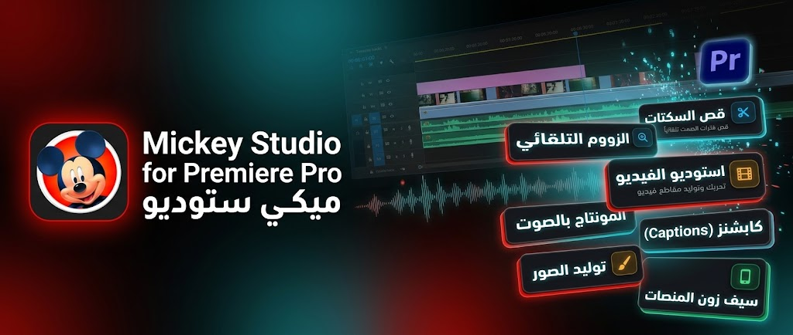

إضافة Mickey Studio لـ Adobe Premiere Pro
حوّل مونتاجك وتلوينك داخل بريمير إلى سرعة صاروخية: محرك 3D LUT أصلي مسرّع بكرت الشاشة (GPU) بخط أصفر Real-Time، و32 لوت سينمائي حصري، وحذف الصمت، وتفريغ الصوت، والموشن جرافيك — في مثبّت واحد بدون Creative Cloud.

كل ما تحتاجه في المونتاج داخل لوحة واحدة
أدوات احترافية مصممة خصيصًا لتسريع عملك داخل Adobe Premiere Pro بدون تعقيد.
محرك تلوين Lumetri + 3D LUT (GPU)
لوحة Lumetri كاملة بمزامنة فورية مع بريمير، بالإضافة لبلجن Mickey Studio LUT المسرّع بكرت الشاشة (CUDA/OpenCL) لتطبيق أي ملف .cube بدقة 100% بدون تغيير سلايدرزك.
32 لوت سينمائي حصري مدمج
مكتبة حصرية من 32 لوت سينمائي (Mickey Studio 01 – 32) جاهزة داخل قائمة Creative Look مع تحكم كامل في القوة (Intensity) وتبديل فوري بضغطة زر.
حذف الصمت والقص التلقائي
اكتشاف وحذف فترات الصمت والفراغات من التايملاين بدقة عالية مع خيارات Padding وZoom Cut لتجهيز فيديوهات يوتيوب والريلز في ثوانٍ.
تفريغ الصوت والترجمة العربية (Whisper)
تحويل الصوت العربي والإنجليزي إلى نصوص وملفات SRT متزامنة تلقائيًا داخل بريمير بدقة ممتازة.
صانع الموشن جرافيك بالذكاء الاصطناعي
توليد مشاهد وعناوين موشن جرافيك عربية وإدراجها مباشرة في مشروعك داخل Premiere Pro.
خطوط الأمان (Safe Zones) ومزامنة الحساب
قوالب Safe Zones جاهزة لـ TikTok وReels وShorts، مع ربط سلس بحسابك السحابي على Mickey Studio.
التثبيت في 3 خطوات بسيطة
لا تحتاج إلى Adobe Creative Cloud أو ZXP Installer.
نزّل المثبّت الموحد
اضغط على زر التحميل المباشر لتنزيل ملف MickeyStudio-Setup-2.6.62.exe (الإصدار الأحدث).
شغّل المثبّت (بريمير مغلق)
سيقوم المثبّت تلقائيًا بتثبيت الإضافة وبلجن الـ 3D LUT المسرّع بكرت الشاشة وتفعيل محرك CEP.
افتح الإضافة داخل بريمير
افتح Adobe Premiere Pro ثم من القائمة العلوية اختر Window > Extensions > Mickey Studio.
جاهز لتجربة Mickey Studio داخل Premiere Pro؟
الإصدار 2.6.62 · Windows 10/11 & macOS (Apple Silicon / Intel) · Premiere Pro 2024 – 2027